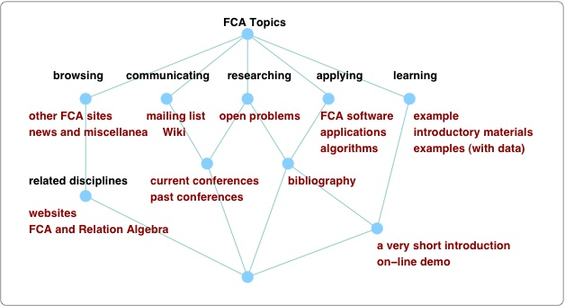

Formal Concept Analysis Homepage --
Table of Contents/Sitemap --
Uta Priss

Formal Concept Analysis Homepage
Formal Concept Analysis (FCA) is a mathematical theory of data analysis using
formal contexts and concept lattices. The contents of this site can be
accessed by clicking on one of the red objects in the
concept lattice below or via the table of contents.
On-line demos:
FCA Demo, Concept Neighbourhoods in
Roget's Thesaurus and WordNet.

Current Conferences on Formal Concept Analysis
- ICFCA, ICCS and CLA are currently dicussing a possible joint conference
2024 in Cadiz, Spain.
- There will be no CLA conference in 2023.
(permanent CLA website).
- FCA4AI Macau, co-located with IJCAI,
August 2023. (Caution: I am not sure whether the link is safe)
Conferences with special sessions/workshops on FCA:
Also possibly of interest:
Diagrams conference series
CARLA workshop series
Mailing List
Information about the
Formal Concept Analysis mailing list
Links
FCA Software
Older Versions of this Website
Older versions of this site are available at
archive.org.
Copyright 2007. Uta Priss
www.upriss.org.uk
Please send comments about this site to: